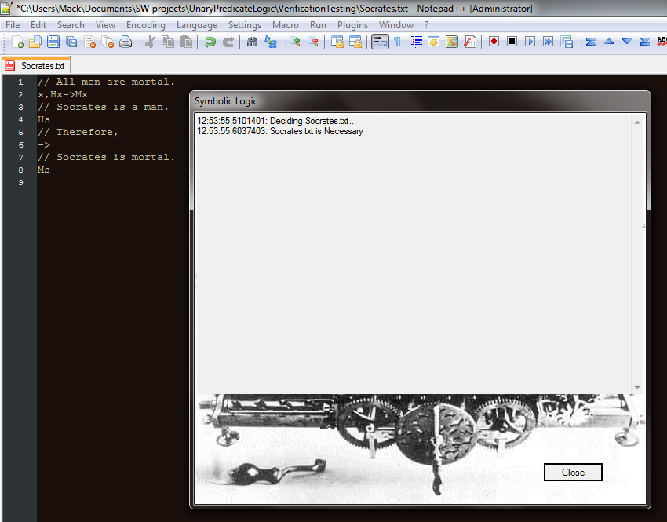
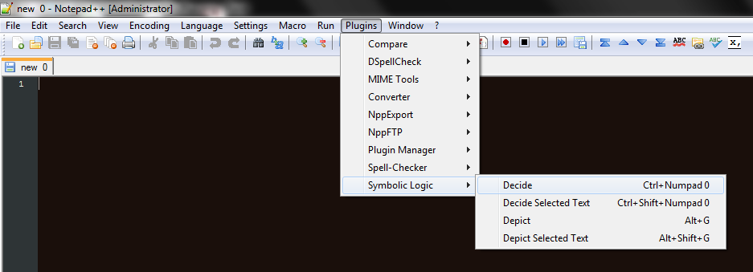
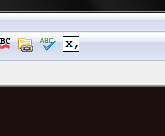

Download
Plugin for Notepad++

I've built the "Decide" and "Depict" functions of the web application into a plugin for Notepad++, which is a fully-featured text editor. It has some advantages over the web application:
- You can use all the features of a text editor when you are working with statements, like editing multiple files at once and finding and replacing text.
- The plugin is much faster. On my computer, it decides statements about 30 times faster than the web application!
- Once you've installed it, you don't need to be connected to the Internet to use it.
- You can save the depictions of statement graphs as PNG files.
Prerequisites
To use the plugin, the following software must also be installed:
- Notepad++
- Microsoft .NET 4.5.1 or higher. If you use Windows and Windows Update is enabled, this has probably been installed on your computer automatically.
- Graphviz, but only if you want to "depict" statements.
Installation
To install the plugin:
- Download Notepad++Plugin.zip.
- Open the .zip file and copy its contents to NotePad++'s plugins folder (normally C:\Program Files (x86)\Notepad++\plugins). Windows will ask if you want to merge the "Config" folder. Choose "Yes".
- If you have Graphviz, add Graphviz' binary folder (e.g. C:\Program Files (x86)\Graphviz2.34\bin) to the PATH environment variable.
Use
Once the plugin has been installed, all you need to do to is start Notepad++. The plugin's functions should be in the menu under "Plugins → Symbolic Logic".

The "Decide" function will also have an icon on the toolbar:
